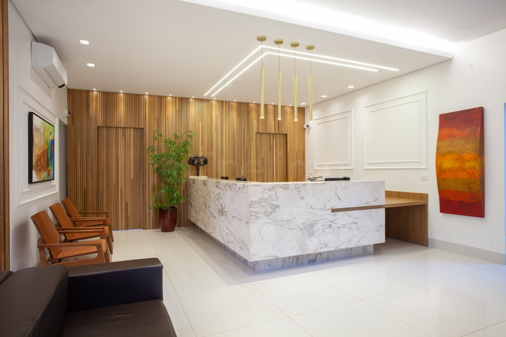
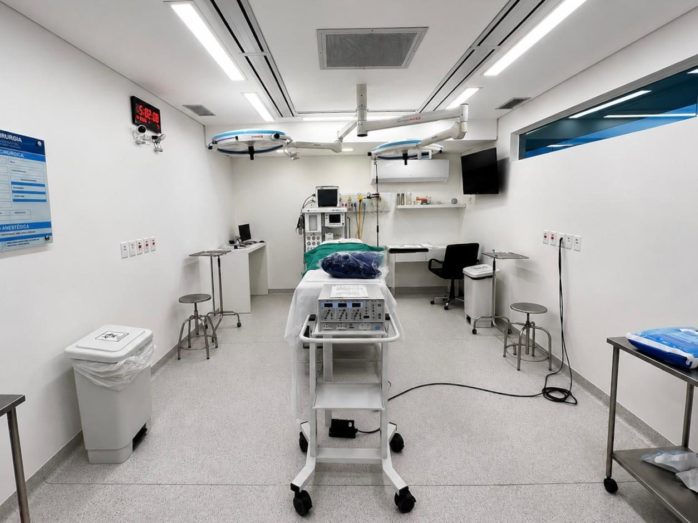
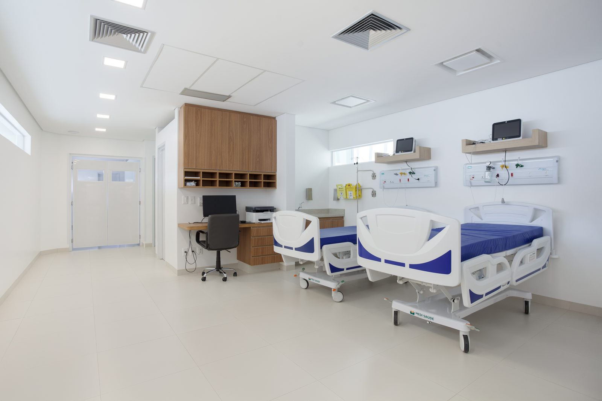
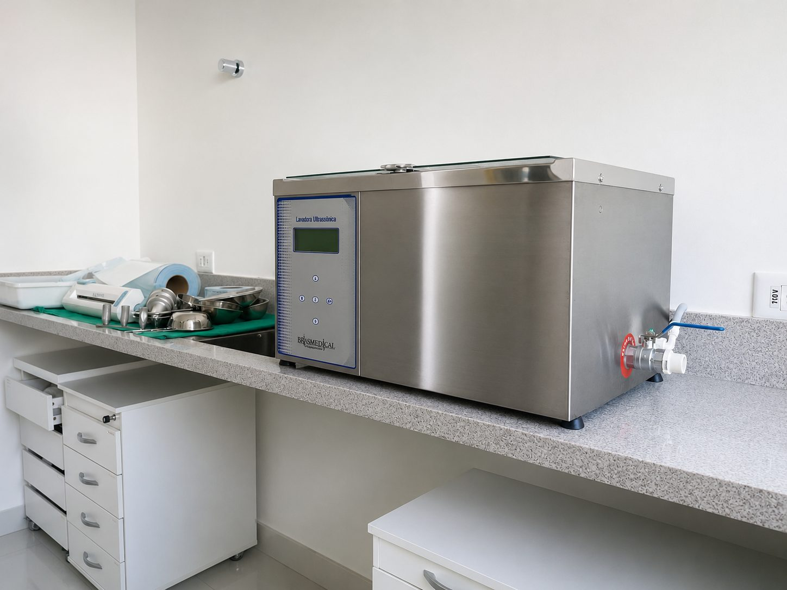
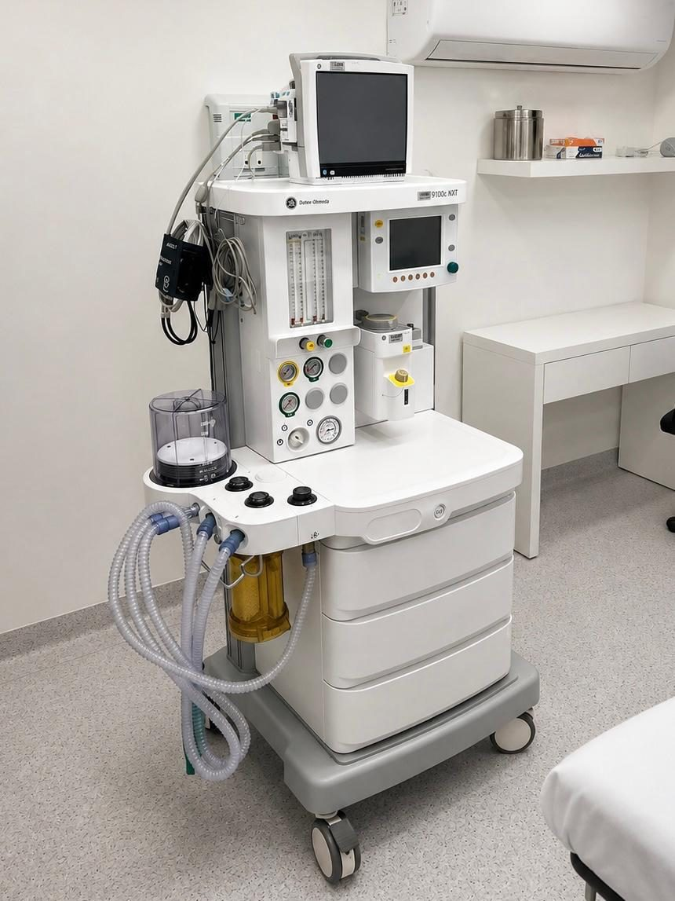
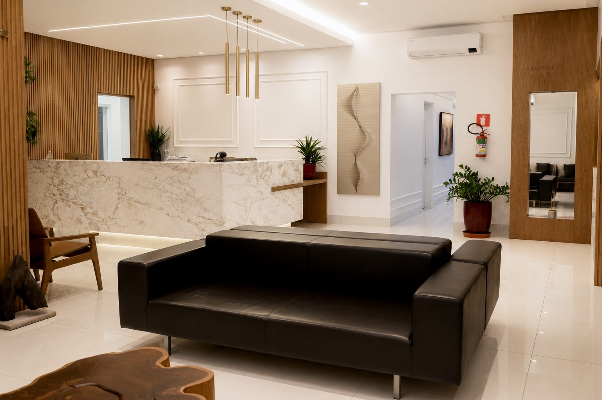
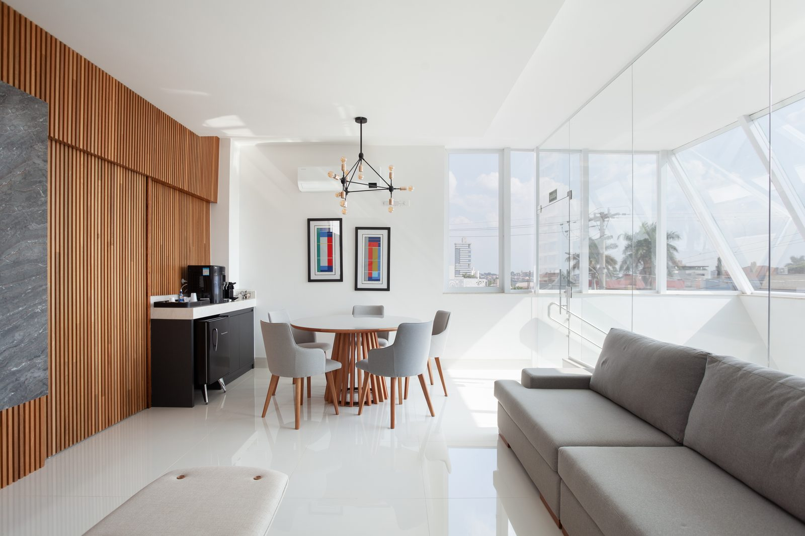

O Hospital
Um tour pelos ambientes de um hospital dedicado exclusivamente à cirurgia plástica — da recepção à central de esterilização, no Jardim dos Estados, em Campo Grande.
Recepção
Aqui não existe pronto-socorro. Não há urgências cruzando corredores, nem espera ansiosa. Quem chega, chega para uma conversa combinada.
A recepção foi desenhada para o intervalo entre a rua e o consultório: luz serena, assentos generosos, discrição. O primeiro ambiente já diz ao que a casa veio.

Recepção
Centro cirúrgicoCentro cirúrgico
O centro cirúrgico é próprio e fica dentro do hospital — projetado para a cirurgia plástica, e para mais nada.
Sem deslocamentos entre unidades, sem salas compartilhadas com outras especialidades: o fluxo inteiro acontece sob o mesmo teto.
Após a cirurgia, o paciente permanece no hospital até que os efeitos da anestesia passem e os sinais vitais estejam estáveis.
Do bloco à enfermagem, uma rotina inteira dedicada a cirurgias eletivas planejadas.
Salas de procedimento
Procedimentos estéticos e minimamente invasivos pedem um ambiente próprio — nem consultório simples, nem centro cirúrgico completo.
É nessas salas que acontecem os tratamentos não cirúrgicos do hospital, com o cuidado e a assepsia de quem também opera. Cada procedimento, no ambiente que a sua indicação médica pede.

Salas de procedimento Quartos de recuperação
Quartos de recuperação
Recuperação
Depois do bloco, o descanso: quartos privativos onde o paciente permanece acompanhado pela equipe, com a serenidade de quem não precisa ir a lugar nenhum.
A recuperação aqui tem nome próprio — hotelaria — e uma página inteira dedicada a ela.
A hotelaria em detalhes →Central de esterilização
A central de material e esterilização fica dentro do próprio hospital, sob controle direto da equipe — do preparo ao pós-uso.
Num fluxo 100% dedicado a cirurgias eletivas planejadas, cada instrumento tem origem, processo e destino conhecidos. É o tipo de ambiente que o paciente nunca visita — e que existe inteiro por causa dele.

Central de esterilização
TecnologiaTecnologia
Tecnologia, aqui, não é vitrine: cada equipamento existe para servir a uma indicação precisa, definida em avaliação médica.
Microagulhamento combinado à radiofrequência para tratamentos de pele do rosto e do corpo.
Feixes de luz concentrada empregados em tratamentos de rejuvenescimento da pele.
Radiofrequência bipolar aplicada em procedimentos de remodelação corporal.
A mesma estrutura também sedia cursos práticos para médicos — um hospital que atende e ensina.
Em imagens
Ambientes reais, sob a mesma luz e o mesmo padrão — do primeiro corredor ao último detalhe.
 Centro cirúrgico
Centro cirúrgico
Recepção
Quartos Circulação
Circulação Detalhes
DetalhesPor que tudo isso
Cada ambiente deste tour existe por uma única razão: o cuidado com quem escolheu operar num hospital dedicado.
Agende sua avaliação
A melhor forma de entender a estrutura é atravessá-la — começando por uma conversa com a nossa equipe.